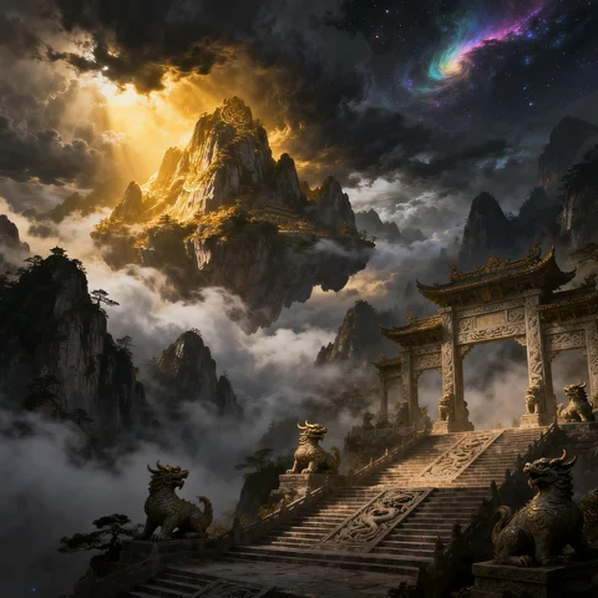
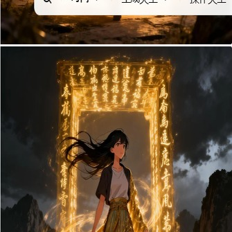

山海志异
AI漫剧作品集 · 第一话「破界之逃」
Characters
角色设定
三位核心角色，能力互补，构成叙事张力。

主角
林溪
Lin Xi · The Restoration Clerk
古籍修复师，26岁，在现实中是一位清秀干练的青年，意外穿越进入《山海经》世界，成为被时间遗忘文字的"修复者"。性格沉静专注、有轻微强迫症，但在危险时刻展现出超乎寻常的冷静与决断。
「观澜」 能看见山海经原文的"文气"流动
「补天」 通过书写文字暂时修复世界的破损
「补天」 通过书写文字暂时修复世界的破损
配角
涂山九
Tu Shan Jiu · The Nine-Tailed Wanderer
青丘狐族少女，外表18岁（实际年龄不详），青丘狐族，性格狡黠贪玩，实战经验丰富。第一次相遇时试图"救"林溪，却把林溪推向更大的麻烦。口头禅是"不救"。
「幻观」 看穿一切幻象与谎言
「灵笛」 用灵笛控制心智（但从不对主角使用）
「灵笛」 用灵笛控制心智（但从不对主角使用）

反派
蚀文
Shi Wen · The Corrupted Script
世界的"文殇"——被时间侵蚀的古籍文字所化成的灾厄。它不是纯粹的恶，而是被时代遗忘的痛苦的集合体，目的是让《山海经》世界归于虚无。
「蚀文」 将一切文字腐蚀为空无之地
「旧忆」 利用被遗忘的痛苦记忆打击对手
「旧忆」 利用被遗忘的痛苦记忆打击对手
World Setting
世界观设定

昆仑墟
天界废墟，山海经世界的中心。残破的宫殿、崩塌的玉阶、仍在运转的上古机关。这里是"文气"最浓郁的地方，也是蚀文侵蚀最严重的区域。废墟中仍存活的机关守卫，会本能攻击一切靠近者——除非你能读懂它们的铭文。
青丘 · 狐族领地
九尾狐族的故乡，与人间相邻却又隔绝的奇妙空间。常年桃花盛开，有特殊的结界保护外界干扰。青丘狐族与《山海经》世界有古老的契约关系。
文气体系
-
文炁用文字沟通万物的能力（修复者的基础能力）
-
剑炁用文字攻击/防御（战斗系能力）
-
理炒与世界中的玉壁建立链接（最高阶能力），能短暂获得上古守护者的部分记忆与力量
Storyboard
第一话分镜脚本
「破界之逃」· 选题：一个现代人穿越进入《山海经》世界，发现自己的修复工作能真正改变这个世界的命运。
第一话 · 破界之逃
🎬
帧1 · 待配图
帧 01
特写：古籍修复师正在修复一卷泛黄的《山海经》残卷，笔尖轻轻划过，蚂蚁般大小的古籍逐渐恢复原貌。窗外是现代城市的钢筋混凝土，反差强烈。
旁白：我是林溪，山海经遗迹馆的修复员。我的工作，是让那些被时间遗忘的文字，重新被人看见。
🎬
帧2 · 待配图
帧 02
古籍师用笔尖交错修补空隙——古籍中有一个不规则的空洞，边缘若被热笔。
古籍师：这儿……热笔"不是天灾造成的。更像是……在"后退"？
🎬
帧3 · 待配图
帧 03
古籍师用手轻按空洞边缘。刹那间，她的手指穿过纸面，像穿过水面——周围的世界开始崩解。
（无对白）：视觉冲击：现代世界淡化成文字和空白。
🎬
帧4 · 待配图
帧 04
切换镜头：山海经世界——林溪整个人被卷入"文字漩涡"，周围的世界是山水画，是活的。
（无对白）：镜头拉远，展示穿越的宏大尺度感。参考传统山水画。
🎬
帧5 · 待配图
帧 05
转场：大远景，昆仑山脊。云雾缭绕的巨型山脊，隐约可见的神庙轮廓，天空中隐约可见神兽返航。
旁白：后来我才知道，我修复的不只是书——而是一个世界。
🎬
帧6 · 待配图
帧 06
林溪从半空中掉落，被一只毛茸茸的手抓住手腕，拖到岩石上。抬头，看到涂山九倒挂着看她，九条尾巴在身后悠然地摇。
涂山九：又一个人间来的？/ 等等，频率越来越高了……第一次，地球的来访频率越来越高了。
🎬
帧7 · 待配图
帧 07
林溪回头，看见自己身上的衬衫已经变成古袍（无缝转变），手指间还有未消散的金色光粒——文字觉醒的痕迹。
林溪：这是……《山海经》的世界？ 那本书……那本我正在修复的书！
🎬
帧8 · 待配图
帧 08
涂山九神色一变，站起来警戒。远处传来恶狠的声音——是空中碎裂成碎片的文字。
涂山九：不好，是蚀文！/ 第一次来就遇到它，小修复员，你的频率真是高得离谱！
🎬
帧9 · 待配图
帧 09
林溪慌张地伸手去抓地上的岩石，空中飘来一段古文字——是《山海经》残卷中的文字，第一次觉醒——一串金色文字从她手掌中浮现，形成屏障挡住蚀文攻击。
林溪：发现自己有能力：原来——文"活了"？
🎬
帧10 · 待配图
帧 10
涂山九吹响灵笛，制止了蚀文追击。回头看林溪，神色复杂。
涂山九：怎样，有兴趣吗，小修复员？/ 看起来你不是普通人，小修复员……
🎬
帧11 · 待配图
帧 11
林溪看着手掌中残留的文字光粒，又看看周围的山海世界：这不是梦。她接受了。
林溪：我的工作，是让那些被时间遗忘的文字，重新被看见。 那现在……就包括这个世界。
🎬
帧12 · 待配图
帧 12
定格画面：林溪（金光闪烁）与涂山九（狐尾飘舞）背靠背伫立，身后是崩坏的昆仑墟与袭来的黑暗文字洪流。
标题出现：《山海志异》第一话·破界之逃·完。
AI Prompts
AI图像生成提示词
专业级提示词，可直接复制使用。包含仿真人（数字人）和动漫两套风格，适配不同岗位需求。
A1 · 封面 · 穿越瞬间
仿真人
A photorealistic close-up shot of a beautiful young Chinese woman, early 30s, her face frozen in shock and wonder, her modern casual outfit dissolving into elegant ancient hanfu as golden light swirls around her, she stands in a glowing portal made of floating ancient Chinese calligraphy characters, long black hair blown by supernatural wind, dark sky with ancient mountain ruins in the background, dramatic backlighting, cinematic 35mm lens, fantasy film still photography
A2 · 主角 · 林溪
仿真人
A hyper-realistic portrait of a young Chinese woman wearing elegant dark navy blue hanfu with subtle gold embroidery, she holds a glowing ancient manuscript scroll, her expression is calm and intelligent, her long hair neatly styled with a jade hairpin, soft warm cinematic lighting from the side, dark moody background with faint ancient text patterns, fashion photography style, 8K detail, fantasy film character portrait
A3 · 配角 · 涂山九
仿真人
A hyper-realistic portrait of a beautiful young woman with nine luminous golden fox tails floating behind her, she wears ornate ancient Chinese royal attire with jade ornaments, her expression is playful and mysterious, one hand gently tucking hair behind her ear, she stands in a moonlit bamboo forest, silver-blue moonlight creates soft rim light around her, fog drifts between the bamboo stalks, cinematic photography, fantasy portrait
A4 · 反派 · 蚀文
仿真人
A terrifying hyper-realistic creature made entirely of ancient black ink Chinese calligraphy characters fused into a humanoid shadow form, two glowing crimson eyes pierce through the darkness at the center, black ink tendrils extend from the body holding broken stone tablets covered in corrupted text, surrounded by swirling dark mist, ominous red underlighting, horror film aesthetic, dramatic wide shot, dark fantasy
A5 · 场景 · 昆仑墟
仿真人
A majestic wide shot of ancient stone palace ruins floating among heavy clouds, broken pillars carved with mythical beasts line the crumbling grand staircase, golden divine light breaks through thick mist illuminating dust particles, shattered jade floors and fallen celestial decorations scattered around, vast dramatic sky, epic scale, cinematic photography, Chinese fantasy architecture, 8K detail
A6 · 高潮 · 文字觉醒
仿真人
A dramatic cinematic still of a young Chinese woman in flowing ancient hanfu kneeling on rocky ground, golden glowing Chinese characters rise from her outstretched hands forming a bright protective shield, a beautiful fox-tailed woman stands beside her in combat stance, a massive dark entity of corrupted characters looms threateningly in the background, epic fantasy battle moment, warm golden light against dark sky, 8K cinematic photography
B1 · 封面 · 穿越瞬间
动漫
Anime key visual illustration, wide cinematic composition, a young woman in a modern hoodie being pulled into a brilliant golden portal surrounded by swirling ancient Chinese calligraphy, her expression shows shock and awe, dynamic motion lines, dramatic sky transitioning from orange sunset to mystical deep purple, ancient mountain ruins visible in the background, clean cel-shaded anime art, vibrant color palette, detailed anime background art, Studio Ghibli-inspired atmosphere, 16:9 film frame
B2 · 主角 · 林溪
动漫
Anime character portrait illustration, a young Chinese woman in elegant dark blue hanfu decorated with subtle star constellation patterns, she holds an ancient glowing manuscript, her eyes show quiet determination with a hint of warmth, soft smile, clean anime cel-shading, detailed hair with beautiful light reflections, warm golden key light from above, blurred soft background with faint ancient character patterns, Japanese anime art quality, portrait aspect ratio
B3 · 配角 · 涂山九
动漫
Anime character design illustration, a beautiful fox spirit girl with nine flowing luminous tails made of golden-white light, she wears traditional Chinese-style anime hanfu with intricate floral embroidery, one eye playfully hidden by her hair, her expression is mischievous yet wise, standing in a misty bamboo forest at night, bright full moon casting blue-white light, cel-shaded anime style with dramatic moonlight contrast, detailed anime background, magazine-quality anime artwork
B4 · 反派 · 蚀文
动漫
Dark anime villain design illustration, a menacing humanoid figure composed entirely of shattered black ink Chinese calligraphy characters, two glowing menacing red eyes visible in the shadowy face, jagged broken characters form sharp tentacle-like appendages, ancient stone tablets float around the corrupted entity, ominous dark red and black color scheme, dramatic anime villain composition, detailed anime background with swirling ink particles, horror-fantasy anime aesthetic
B5 · 场景 · 昆仑墟
动漫
Anime environment concept art, grand celestial palace ruins floating in ethereal golden mist, magnificent broken pillars decorated with carved mythical beasts, soft golden hour light filtering through dramatic cloud formations, ancient Shan Hai Jing architecture with pagodas and stone archways, wide dramatic perspective, detailed anime background painting style with soft gradients, Studio Ghibli meets Chinese mythology atmosphere, beautiful cinematic composition
B6 · 高潮 · 文字觉醒
动漫
Anime action key frame, split dramatic composition, a young woman in glowing ancient hanfu raises both hands as brilliant golden Chinese characters swirl upward forming a protective barrier, a fox-tailed girl leaps beside her in an elegant combat pose, a massive dark entity made of corrupted characters attacks from behind, epic climactic scene, dynamic anime action composition, cel-shaded with dramatic contrast lighting, intense emotion, 16:9 cinematic anime frame